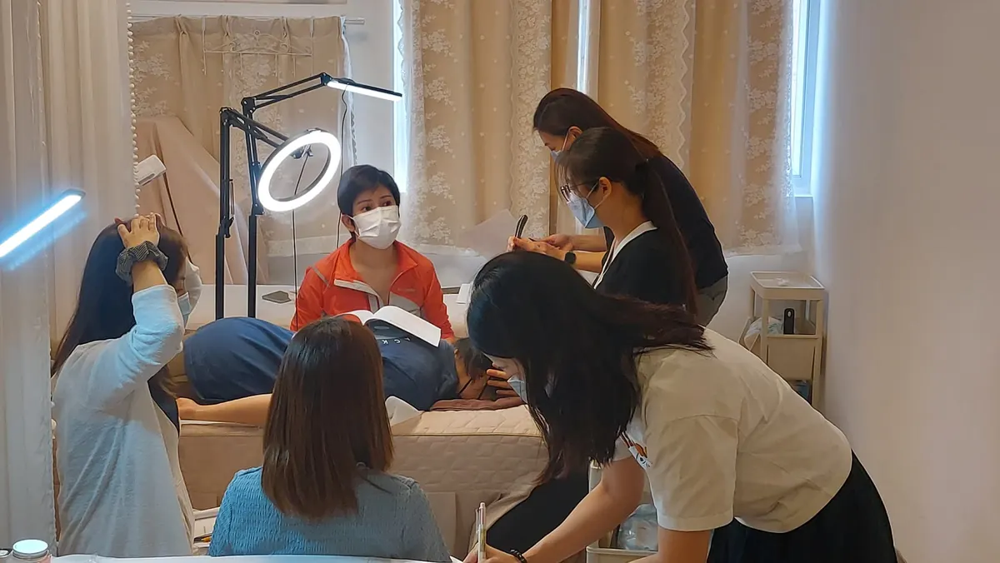

The Bojin Journal · Eyes & Brows
Heavy, Hooded Eyelids? Why They Happen and What Helps

You slept well, you feel fine, and still someone asks if you’re tired. Heavy lids can do that. The fold above your eye sits a little lower than it used to, and your eyes look smaller and more tired than you feel.
Hooded eyelids usually come from a brow that has settled a little lower, thinner skin on the upper lid, and a forehead that holds tension all day. Gentle self-care above the eye, about twice a week and about a minute per side, can ease that tension so the eyes look a little more open for a while. It won’t change the lid’s structure. A lid that droops suddenly or on one side needs a doctor. This is self-care, not medical care.
Why your lids feel heavy
A few ordinary changes stack up. The brow settles a little lower with the years, so the skin of the upper lid has less support above it. The forehead and the space between the brows hold tension all day, which adds to the downward pull. And the skin of the eyelid is some of the thinnest on your body, so it shows every one of these changes first.
So a tired look usually isn’t a sleep problem. It’s the brow, the forehead and thin skin working together. Most of the work that helps happens above the eye, never on it. For the brow side of this story, see heavy, low brows.
Hooded, puffy or droopy?
Three different things get called “heavy eyelids.” They aren’t the same, and only one of them is a self-care question:
| What you see | What it usually is | What to do |
|---|---|---|
| A soft fold of skin resting over the lid; the lid opens normally | Hooded lids | Gentle self-care above the eye can help it look more open for a while |
| Swelling that’s worse in the morning and changes day to day | Puffy lids | Often eases as the day goes on; see tired, puffy eyes |
| The edge of the lid itself sits lower, often on one side | A droopy lid (ptosis) | See an eye doctor; self-care isn’t the answer |
| A lid that drops suddenly, or with pain or double vision | Something urgent | See a doctor right away |
Habits that make lids look heavier
- Rubbing your eyes. The lid skin is thin; rubbing tugs at it. Pat instead.
- Long stretches at a screen. A staring face holds the forehead and brows tight. Look far away and blink every so often.
- Frowning while you concentrate. The muscle between the brows pulls them together and down, right over the lids.
- Raising your brows to read. If you lift your brows to see small print, it may be time for an eye exam.

A 10-second lid check
- Look straight ahead in even light. Can you see the crease of each upper lid, or does a fold of skin cover it? Is one side heavier?
- Raise your brows gently with your fingertips. If the fold lifts away, the brow and forehead are part of the story, and that’s the area to work. If the lid edge itself stays low, mention it to an eye doctor.
One honest note: fingertips, and most home tools, mostly move the top layer of skin, a millimeter or two deep. In my classes, tightness around the eyes that comes back soon after a session is often being pulled from further back, by the scalp and the base of the skull. That’s why the full method works in a set order.
What can help, honestly
Different things help different parts of the problem. Here’s an honest map, so you spend your time and money where it can actually do something:
| Approach | What it works on | What to expect |
|---|---|---|
| Eye creams | The skin surface: moisture and comfort | Softer-feeling skin; it won’t move a fold of skin |
| A cool compress in the morning | Morning puffiness | Puffiness may settle a little sooner; it doesn’t change hooding |
| Gentle self-care above the eye | Forehead and brow tension that adds to the weight | Eyes that look a little more open for a while; about twice a week |
| An eye doctor or eyelid surgeon | The lid’s structure, and skin that blocks your view | A professional assessment of what’s right for you |
Wearing sunglasses outdoors also helps in a small way: you squint less, so the brows and forehead do less pulling through the day.
One gentle line tonight
The work for heavy lids happens above them. With a little cream on your fingertips, start just above the inner end of one brow and make small, light circles along the brow bone out to the tail. Lift off and return to the start. Three slow passes, about a minute for that side, then the other. Keep to the bone above the brow, never on the lid.
“The most common mistake is covering too much at once. That isn’t wrong, but one line at a time feels different, and it’s more precise.”Yu-Ting Lan, on new students
This is the same first step Yu-Ting shows in the free 1:18 demo, and you can see it drawn on a face on the Eyes & Brows guide. The rest of the eye area, in order, is taught in the course.
Honest expectations, and a safety note
Done about twice a week, many women notice their eyes look a little more open and the forehead feels less tight, especially in the morning. That’s gentle and temporary; it fades if you stop. This isn’t eyelid surgery or a brow lift, and it won’t change the structure of your lid. If the skin over your lids blocks your view, that’s worth raising with an eye doctor.
Quick answers
What causes hooded eyelids?
Usually a brow that has settled a little lower, thinner skin on the upper lid, and a forehead that holds tension. Together they let a soft fold of skin rest closer to the lashes.
Are hooded eyelids the same as droopy eyelids?
No. With hooded lids, a fold of skin rests over the lid while the lid itself opens normally. With a droopy lid (ptosis), the edge of the lid sits lower, often on one side. A droopy lid is a question for an eye doctor.
Can bojin fix hooded eyelids?
Not the structure. It can ease the forehead and brow tension that adds to the heavy feeling, so the eyes look a little more open for a while. The effect is gentle and temporary, and it builds with consistency.
How often should I do this?
About twice a week, about a minute per side, with rest days between. Work above the eye, on the bone, and never on the eyelid or eyeball.
When should I see a doctor about my eyelids?
If a lid droops suddenly, droops on only one side, blocks your vision, or comes with pain, double vision or a headache, see a doctor right away.
See the first eye-area step up close
In the free 1:18 demo, Yu-Ting works the first step of the eye routine, just above the brow, at real speed. The rest of the eye area comes later, in the course. Watch her pressure and pace, then use the same above your own eyes.
Watch the free 1:18 demoPart of the Eyes & Brows guide: a 10-second check, the starting route, and related guides for this area.
Yu-Ting Lan is a Taiwan-based international bojin instructor and the founder of Héhé Studio. She has taught her bojin method to more than a thousand students, from complete beginners to grandmothers, across Taiwan, Hong Kong and Malaysia.